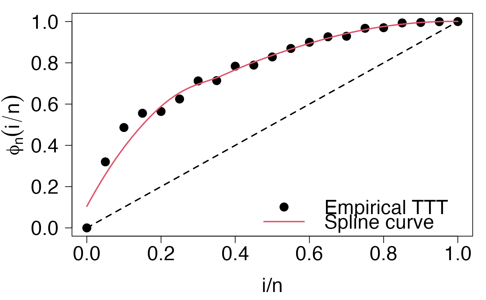
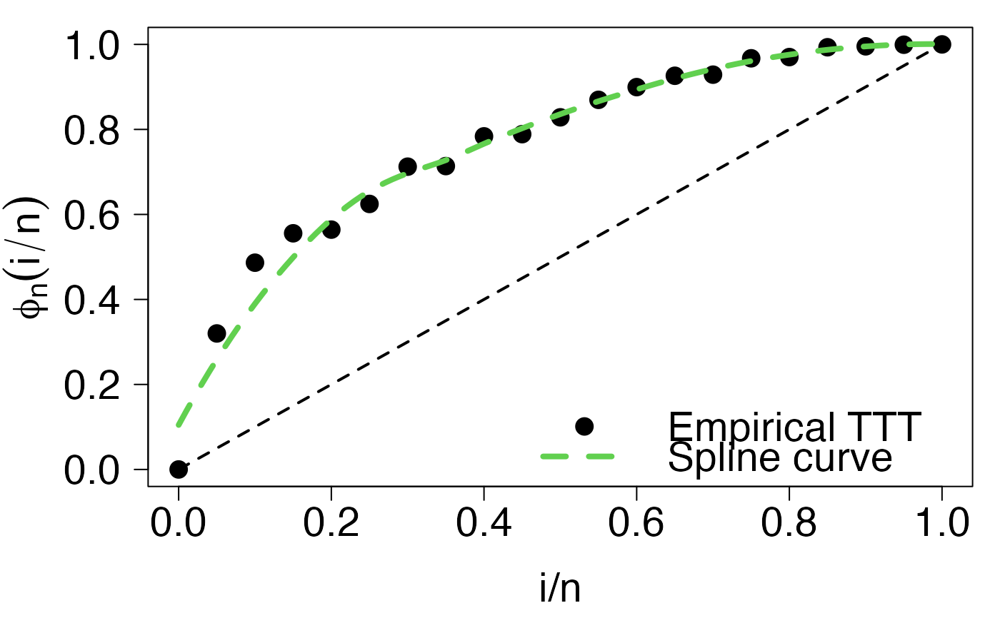

![[Maturing]](figures/lifecycle-maturing.svg)
Put legend after run plot.HazardShape function.
legend.HazardShape(
x,
y = NULL,
legend = c("Empirical TTT", "Spline curve"),
fill = NULL,
col = 1,
border = "white",
lty = NA,
lwd = NA,
pch = c(1, NA),
angle = 45,
density = NULL,
bty = "o",
bg = par("bg"),
box.lwd = par("lwd"),
box.lty = par("lty"),
box.col = par("fg"),
pt.bg = NA,
cex = 1,
pt.cex = cex,
pt.lwd = lwd,
xjust = 0,
yjust = 1,
x.intersp = 1,
y.intersp = 1,
adj = c(0, 0.5),
text.width = NULL,
text.col = par("col"),
text.font = NULL,
merge = TRUE,
trace = FALSE,
plot = TRUE,
ncol = 1,
horiz = FALSE,
title = NULL,
inset = 0,
xpd = TRUE,
title.col = text.col[1],
title.adj = 0.5,
title.cex = cex[1],
title.font = text.font[1],
seg.len = 2,
curve_options = list(col = 2, lwd = 2, lty = 1)
)Arguments
- x, y
the x and y co-ordinates to be used to position the legend. They can be specified by keyword or in any way which is accepted by
xy.coords: See ‘Details’.- legend
a character or expression vector of length \(\ge 1\) to appear in the legend. Other objects will be coerced by
as.graphicsAnnot.- fill
if specified, this argument will cause boxes filled with the specified colors (or shaded in the specified colors) to appear beside the legend text.
- col
the color of points or lines appearing in the legend.
- border
the border color for the boxes (used only if
fillis specified).- lty, lwd
the line types and widths for lines appearing in the legend. One of these two must be specified for line drawing.
- pch
the plotting symbols appearing in the legend, as numeric vector or a vector of 1-character strings (see
points). Unlikepoints, this can all be specified as a single multi-character string. Must be specified for symbol drawing.- angle
angle of shading lines.
- density
the density of shading lines, if numeric and positive. If
NULLor negative orNAcolor filling is assumed.- bty
the type of box to be drawn around the legend. The allowed values are
"o"(the default) and"n".- bg
the background color for the legend box. (Note that this is only used if
bty != "n".)- box.lty, box.lwd, box.col
the line type, width and color for the legend box (if
bty = "o").- pt.bg
the background color for the
points, corresponding to its argumentbg.- cex
character expansion factor relative to current
par("cex"). Used for text, and provides the default forpt.cex.- pt.cex
expansion factor(s) for the points.
- pt.lwd
line width for the points, defaults to the one for lines, or if that is not set, to
par("lwd").- xjust
how the legend is to be justified relative to the legend x location. A value of 0 means left justified, 0.5 means centered and 1 means right justified.
- yjust
the same as
xjustfor the legend y location.- x.intersp
character interspacing factor for horizontal (x) spacing between symbol and legend text.
- y.intersp
vertical (y) distances (in lines of text shared above/below each legend entry). A vector with one element for each row of the legend can be used.
- adj
numeric of length 1 or 2; the string adjustment for legend text. Useful for y-adjustment when
labelsare plotmath expressions.- text.width
the width of the legend text in x (
"user") coordinates. (Should be positive even for a reversed x axis.) Can be a single positive numeric value (same width for each column of the legend), a vector (one element for each column of the legend),NULL(default) for computing a proper maximum value ofstrwidth(legend)), orNAfor computing a proper column wise maximum value ofstrwidth(legend)).- text.col
the color used for the legend text.
- text.font
the font used for the legend text, see
text.- merge
logical; if
TRUE, merge points and lines but not filled boxes. Defaults toTRUEif there are points and lines.- trace
logical; if
TRUE, shows howlegenddoes all its magical computations.- plot
logical. If
FALSE, nothing is plotted but the sizes are returned.- ncol
the number of columns in which to set the legend items (default is 1, a vertical legend).
- horiz
logical; if
TRUE, set the legend horizontally rather than vertically (specifyinghorizoverrides thencolspecification).- title
a character string or length-one expression giving a title to be placed at the top of the legend. Other objects will be coerced by
as.graphicsAnnot.- inset
inset distance(s) from the margins as a fraction of the plot region when legend is placed by keyword.
- xpd
if supplied, a value of the graphical parameter
xpdto be used while the legend is being drawn.- title.col
color for
title, defaults totext.col[1].- title.adj
horizontal adjustment for
title: see the help forpar("adj").- title.cex
expansion factor(s) for the title, defaults to
cex[1].- title.font
the font used for the legend title, defaults to
text.font[1], seetext.- seg.len
the length of lines drawn to illustrate
ltyand/orlwd(in units of character widths).- curve_options
a list whose names are curve graphical parameters, and whose values are the corresponding graphical parameters values.
Details
This function is a wrapper for the legend function.
It just adds two features:
legendhas a default value, regarding thatHazardShapeobjects produces the TTT plot and its LOESS estimation.curve_optionsis used to set legend parameters for the LOESS curve. We encourage you to define first a list with curve parameters, and then pass it toplot.HazardShapeandlegend.HazardShape(see example 2).
Examples
library(EstimationTools)
data("reduction_cells")
TTT_IG <- TTTE_Analytical(Surv(days, status) ~ 1, data = reduction_cells,
method = 'censored')
HS_IG <- TTT_hazard_shape(TTT_IG, data = reduction_cells)
#----------------------------------------------------------------------------
# Example 1: put legend to the TTT plot of the reduction cells data set.
# Run `plot.HazardShape` method.
par(
cex.lab=1.8,
cex.axis=1.8,
mar=c(4.8,5.4,1,1),
las = 1,
mgp=c(3.4,1,0)
)
plot(HS_IG, pch = 16, cex = 1.8)
# Finally, put the legend
legend.HazardShape(
x = "bottomright",
box.lwd = NA,
cex = 1.8,
pt.cex = 1.8,
bty = 'n',
pch = c(16, NA)
)

#----------------------------------------------------------------------------
# Example 2: example 1 with custom options for the curve
# This is the list with curve parameters
loess_options <- list(
col = 3, lwd = 4, lty = 2
)
par(
cex.lab=1.8,
cex.axis=1.8,
mar=c(4.8,5.4,1,1),
las = 1,
mgp=c(3.4,1,0)
)
plot(HS_IG, pch = 16, cex = 1.8, curve_options = loess_options)
legend.HazardShape(
x = "bottomright",
box.lwd = NA,
cex = 1.8,
pt.cex = 1.8,
bty = 'n',
pch = c(16, NA),
curve_options = loess_options
)
